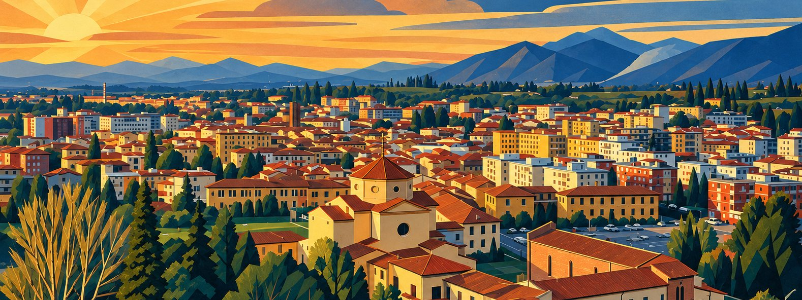

Strumenti digitali · Comunicazione · Consulenza IA
Fabio Ceseri
Sono nato a Borgo San Lorenzo e vivo in Mugello. Sono redattore di Radio Mugello, dove curo il sito della radio e faccio le radiocronache del calcio dilettantistico. Realizzo strumenti digitali con l'ausilio dell'intelligenza artificiale. Sono anche consulente IA.
Cosa faccio
- Strumenti digitaliApp, mappe e siti su misura, realizzati con l'ausilio dell'intelligenza artificiale: dall'idea alla pubblicazione, agli aggiornamenti nel tempo.
- ComunicazioneTesti, comunicati stampa, articoli e contenuti per il web e i social.
- Consulenza IACome usare l'intelligenza artificiale nel lavoro di ogni giorno: strumenti, automazioni, organizzazione.
Progetti
- Viabilità Mugelloviabilitamugello.it Lavori stradali, chiusure, cantieri, deviazioni e incidenti in Mugello e Val di Sieve, su mappa.
- Salute Mugellosalutemugello.it Guida ai servizi sanitari e socio-sanitari del Mugello: ospedale, Casa della Comunità, presidi ASL, farmacie.
- Calcio Mugellocalciomugello.it Squadre, classifiche, risultati e numeri del calcio dilettanti di Mugello e Val di Sieve.
- Mugello Eventmugelloeventi.it La guida agli eventi del weekend in Mugello e Alto Mugello, in collaborazione con Radio Mugello.
- Treni Faentinauso personaleMonitor in tempo reale della linea Faentina: ritardi, soppressioni, bus sostitutivi e avvisi.